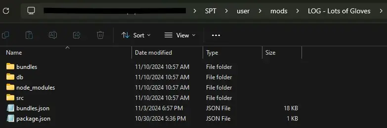

Mod
LOG - Lots of Gloves
- Downloads
- 2,935
- Favourites
- 0
LOG - Lots of Gloves

Mod Description
- I honestly care more about my first person view than third person character so, in light of that. Here are a bunch of hands that I ported.
- Just so you know, the gif doesn’t show all of the hands.
- version 1: places the gloves in the ragman top menu with a placeholder top
- version 2: removes them from the top menu but shoots a large white error as it still tries to place them in a trader, this is done to prevent confusion and force the use of SkinService Menu

Mod Includes
- LOG alyx_vr [HANDS] (SKIN SERVICE)
- LOG adam_smasher [HANDS] (SKIN SERVICE)
- LOG none_technical [HANDS] (SKIN SERVICE)
- LOG western_milsim_v4 [HANDS] (SKIN SERVICE)
- LOG us_rangers_sleeve [HANDS] (SKIN SERVICE) - A little broken
- LOG technician_base [HANDS] (SKIN SERVICE)
- LOG western_otel_full [HANDS] (SKIN SERVICE)
- LOG western_morete_sleeve [HANDS] (SKIN SERVICE)
- LOG western_ghost_classic_out [HANDS] (SKIN SERVICE)
- LOG western_fireteam_west [HANDS] (SKIN SERVICE)
- LOG western_fireteam_west_full [HANDS] (SKIN SERVICE)
- LOG western_frostbite [HANDS] (SKIN SERVICE)
- LOG riot_sleeve [HANDS] (SKIN SERVICE)
- LOG tf141_glove [HANDS] (SKIN SERVICE)
- LOG tf141_favela_sleeve [HANDS] (SKIN SERVICE)
- LOG suit [HANDS] (SKIN SERVICE) - Broken watch :C sorry guys
- LOG sas_urban [HANDS] (SKIN SERVICE)
- LOG price_iw9 [HANDS] (SKIN SERVICE)
- LOG milsim_pak_ssg [HANDS] (SKIN SERVICE)
- LOG gs_jungle [HANDS] (SKIN SERVICE)
- LOG fed_army_arctic [HANDS] (SKIN SERVICE)
- LOG eastern [HANDS] (SKIN SERVICE)
- LOG eastern_2 [HANDS] (SKIN SERVICE)
- LOG eastern_geist [HANDS] (SKIN SERVICE)
- LOG eastern_fingerless [HANDS] (SKIN SERVICE)
- LOG eastern_azur [HANDS] (SKIN SERVICE)
- LOG arctic_wind_sleeve [HANDS] (SKIN SERVICE)
- LOG alex_woodland [HANDS] (SKIN SERVICE) - Missing Watch Textures
- LOG morete_sleeves_full [HANDS] (SKIN SERVICE)
- LOG marines_sleeve [HANDS] (SKIN SERVICE)
- LOG compacted_kilgore [HANDS] (SKIN SERVICE)
- LOG compacted_horangi [HANDS] (SKIN SERVICE)
- LOG soldierfront [HANDS] (SKIN SERVICE)
- LOG ghost_oakley [HANDS] (SKIN SERVICE)a
- LOG veler [HANDS] (SKIN SERVICE)
- LOG ratnik [HANDS] (SKIN SERVICE)
- LOG tactical_fingerless [HANDS] (SKIN SERVICE)
- LOG swat_fingerless [HANDS] (SKIN SERVICE)
- LOG stalker_fingerless [HANDS] (SKIN SERVICE)
- LOG ru_alpha [HANDS] (SKIN SERVICE)
- LOG ratnik_mechanix [HANDS] (SKIN SERVICE)
- LOG novice_sleeve [HANDS] (SKIN SERVICE)
- LOG metro_svitex [HANDS] (SKIN SERVICE)
- LOG dolg_tactical [HANDS] (SKIN SERVICE)
- LOG dolg_bandit [HANDS] (SKIN SERVICE)
- LOG clearly [HANDS] (SKIN SERVICE)
- LOG bandit_ginger [HANDS] (SKIN SERVICE)
- LOG bandit_black [HANDS] (SKIN SERVICE)
- LOG hazard_gloves [HANDS] (SKIN SERVICE)
- LOG hazmat_green [HANDS] (SKIN SERVICE)
- LOG fed_gloves [HANDS] (SKIN SERVICE)
- LOG western_ghost [HANDS] (SKIN SERVICE)
- LOG msc_desert_camo [HANDS] (SKIN SERVICE)
- LOG msc_urban_camo [HANDS] (SKIN SERVICE)
- LOG sas_woodland_camo [HANDS] (SKIN SERVICE)
- LOG sas_ct_camo [HANDS] (SKIN SERVICE)
- LOG sas_ct_camo_wet [HANDS] (SKIN SERVICE)
- LOG fed_basic_urban [HANDS] (SKIN SERVICE)
- LOG fed_army_urban [HANDS] (SKIN SERVICE)
- LOG elite_emp_urban [HANDS] (SKIN SERVICE)
- LOG devgru_urban [HANDS] (SKIN SERVICE)
- LOG arab_opfor_glove [HANDS] (SKIN SERVICE)
Known Issues
- I will say, I’m using a different material so I can get my emissive parts to work so you’ll notice that in-shadow the character will seem quite dark.
- I noticed one of them has a white watch but I already deleted the files and can’t find the (im lazy anyways moving on)
- Minor clipping here and there, the first 34 hands are the best imo.
- LOG alex_woodland hands no watch textures
Dependencies
- Skin Service - You can go through Ragman and select the top but it’s better to just go in-game and use this menu you select the hand you like
Usage
- Open the Skin Service Menu (might have to rebind) then select hands and scroll until you see the suffix “LOG”, select, hit apply.
Commissions & Donations
- Look into commissions or donate on my Ko-Fi. Send a message https://ko-fi.com/trappucci
- Check out my other work on my https://www.patreon.com/TRAPPUSSY
Credits
- GSC Game World, THQ, Plaion, Deep Silver, 4A Games, Raven Software, Infinity Ward, Activision, Valve, CD Projekt RED, CD Projekt
- GrooveypenguinX for framework
Media
v Slower Gif v

Version
1.0.2
SPT ~3.9.0
Fika: unknown
2,414 downloadsUnknown size
WARNING
if you bought and equipped the tops, keep in mind that this update REMOVES them from Ragman and that could “corrupt” your profile.
I removed them from Ragman to prevent confusion and from flood ragman with almost 67 broken tops lol. Technically you can just buy the top and equip the glove you want like that instead of using Skin Service Menu but I think it’s less confusing to just use the menu. if you prefer using the top to pick the glove you want, use the previous version. Not this one.